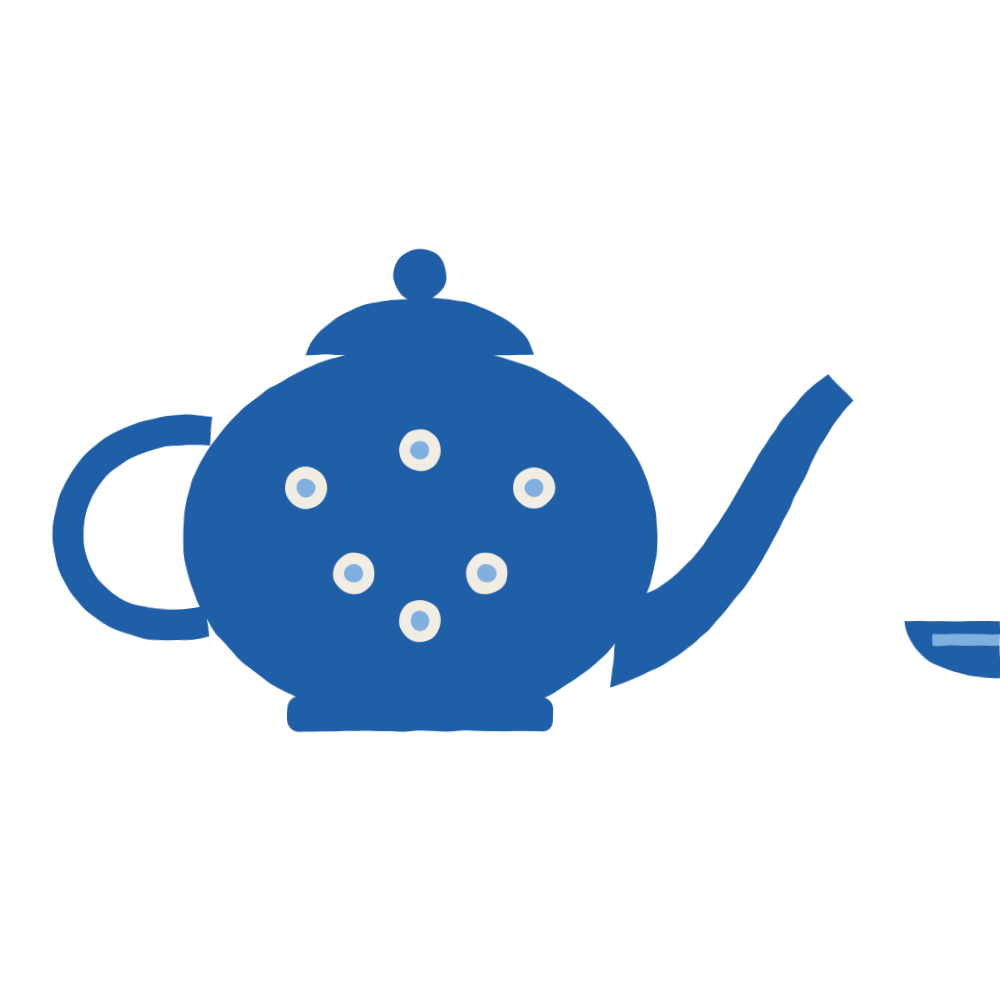

Talas
Талас
Cafés and restaurants 1009Chaikhanas 124Groceries and markets 858Shops 381Services 215Hotels and guesthouses 224Banks and exchange 71Pharmacies and clinics 182Filling stations 118Schools 3
PGKonok üy PrestizhГостевой дом «Престиж»Unofficial pageRGKonok üy RustamГостевой дом «Рустам»Unofficial pageSGKonok üy SamatГостевой дом «Самат»Unofficial pageSGKonok üy SemizГостевой дом «Семиз»Unofficial pageSGKonok üy SherzodГостевой дом «Шерзод»Unofficial pageSGKonok üy SvetlanaГостевой дом «Светлана»Unofficial pageTGKonok üy TalantГостевой дом «Талант»Unofficial pageTGKonok üy TalasГостевой дом «Талас»Unofficial pageTGKonok üy TündükГостевой дом «Тундук»Unofficial pageTGKonok üy TündükГостевой дом «Тундук»Unofficial pageVGKonok üy VesnaГостевой дом «Весна»Unofficial pageZGKonok üy ZarinaГостевой дом «Зарина»Unofficial pageZGKonok üy ZarinaГостевой дом «Зарина»Unofficial pageZGKonok üy ZulfiyaГостевой дом «Зулфия»Unofficial pageKKKonya KebapКонья КебабUnofficial pageICKosmetika · IzyuminkaКосметика «Изюминка»Unofficial pageKCKosmetika · Kara-SuuКосметика «Кара-Суу»Unofficial pageMCKosmetika · MariyamКосметика «Марьям»Unofficial pageNCKosmetika · NurbekКосметика «Нурбек»Unofficial pageNCKosmetika · NurlanКосметика «Нурлан»Unofficial pageOCKosmetika · OksanaКосметика «Оксана»Unofficial pageSCKosmetika · SemizКосметика «Семиз»Unofficial pageVCKosmetika · VitaliyКосметика «Виталий»Unofficial pageKSKuble SoftКубле СофтUnofficial pagePermanently closedAHKurulush · AselСтройматериалы «Асел»Unofficial pageBBKurulush · BaktygülСтройматериалы «Бактыгуль»Unofficial pageBBKurulush · BaktygülСтройматериалы «Бактыгуль»Unofficial pagePHKurulush · BereketСтройматериалы «Берекет»Unofficial pagePBKurulush · BereketСтройматериалы «Берекет»Unofficial pageBBKurulush · BeryozkaСтройматериалы «Берёзка»Unofficial pageBHKurulush · BukharaСтройматериалы «Бухара»Unofficial pageDBKurulush · DilnozaСтройматериалы «Дилноза»Unofficial pageDHKurulush · DostykСтройматериалы «Достык»Unofficial pageEHKurulush · ErmekСтройматериалы «Эрмек»Unofficial pageRGKurulush · GülzarСтройматериалы «Гульзар»Unofficial pageGHKurulush · GülzatСтройматериалы «Гульзат»Unofficial pageIHKurulush · IlyasСтройматериалы «Ильяс»Unofficial pageIBKurulush · IlyasСтройматериалы «Ильяс»Unofficial pageSHKurulush · JazСтройматериалы «Жаз»Unofficial pageJBKurulush · JyldyzСтройматериалы «Жылдыз»Unofficial pageSHKurulush · JıldızСтройматериалы «Жылдыз»Unofficial pageSHKurulush · JıldızСтройматериалы «Жылдыз»Unofficial pageFBKurulush · KutСтройматериалы «Кут»Unofficial pageKBKurulush · Kök-BelСтройматериалы «Кок-Бел»Unofficial pageSHKurulush · KünСтройматериалы «Кун»Unofficial pageAHKurulush · KüzСтройматериалы «Куз»Unofficial pageLHKurulush · LupitaСтройматериалы «Лупита»Unofficial pageMHKurulush · MarinaСтройматериалы «Марина»Unofficial pageMHKurulush · Min-SuСтройматериалы «Мин Су»Unofficial pageNHKurulush · NurСтройматериалы «Нур»Unofficial pagePHKurulush · PakСтройматериалы «Пак»Unofficial pageRHKurulush · RadugaСтройматериалы «Радуга»Unofficial pageSBKurulush · SaltanatСтройматериалы «Салтанат»Unofficial pageSHKurulush · SamarkandСтройматериалы «Самарканд»Unofficial pageSBKurulush · SamarkandСтройматериалы «Самарканд»Unofficial pageSBKurulush · SamatСтройматериалы «Самат»Unofficial pageSHKurulush · SarchashmaСтройматериалы «Сарчашма»Unofficial pageSGKurulush · Staryy gorodСтройматериалы «Старый город»Unofficial pageSGKurulush · Staryy gorodСтройматериалы «Старый город»Unofficial pageSBKurulush · SvetlanaСтройматериалы «Светлана»Unofficial pageSBKurulush · SvetlanaСтройматериалы «Светлана»Unofficial pageTBKurulush · TalantСтройматериалы «Талант»Unofficial pageUHKurulush · UdachaСтройматериалы «Удача»Unofficial pageUHKurulush · UrmaralСтройматериалы «Урмарал»Unofficial pageVBKurulush · VostokСтройматериалы «Восток»Unofficial pageYBKurulush · Young-JaСтройматериалы «Ён Джа»Unofficial pageZHKurulush · ZulfiyaСтройматериалы «Зулфия»Unofficial pageFPKut PizzaПицца «Кут»Unofficial pageFPKut Sooda borboruТЦ «Кут»Unofficial page

Kök ChoinekЧайхана «Кок Чойнек»KCKök-Bel CoffeeUnofficial pageKHKök-Bel HostelХостел «Кок-Бел»Unofficial pageKMKök-Bel bazarıРынок «Кок-Бел»Unofficial pageSPKün Sooda borboruТЦ «Кун»Unofficial pageAMKüz bazarıРынок «Куз»Unofficial pageALLagman-üy AselЛагман-хаус «Асел»Unofficial pageMGLagman-üy BagymЛагман-хаус «Багым»Unofficial pageFLLagman-üy DostukЛагман-хаус «Достук»Unofficial pageFLLagman-üy DostukЛагман-хаус «Достук»Unofficial pageDLLagman-üy DruzyaЛагман-хаус «Друзья»Unofficial pageILLagman-üy IlyasЛагман-хаус «Ильяс»Unofficial pageKLLagman-üy KanykeiЛагман-хаус «Каныкей»Unofficial pageKLLagman-üy KimЛагман-хаус «Ким»Unofficial pageNLLagman-üy NurЛагман-хаус «Нур»Unofficial pageSLLagman-üy TashЛагман-хаус «Таш»Unofficial pageVLLagman-üy VesnaЛагман-хаус «Весна»Unofficial pageYLLagman-üy YuhannaЛагман-хаус «Юханна»Unofficial pageLKLale KebapЛале КебабUnofficial pageLKLale KebapЛале КебабUnofficial pageLHLarisa HostelХостел «Лариса»Unofficial pageLPLarisa PizzaПицца «Лариса»Unofficial pageLPLarisa Sooda borboruТЦ «Лариса»Unofficial pageLBLiberty BurgersUnofficial pageLBLiberty BurgersUnofficial pageLBLiberty BurgersUnofficial pageLCLiberty CaféUnofficial pageLDLiberty DinerUnofficial pageLDLiberty DinerUnofficial pageLGLiberty GrillUnofficial pageLSLiberty SteakhouseUnofficial pageLSLiberty SteakhouseUnofficial pageLSLiberty SteakhouseUnofficial pageSPMamlekettik dariykana No. 1Государственная аптека № 1Unofficial pageSPMamlekettik dariykana No. 10Государственная аптека № 10Unofficial pageSPMamlekettik dariykana No. 11Государственная аптека № 11Unofficial pageSPMamlekettik dariykana No. 12Государственная аптека № 12Unofficial pageSPMamlekettik dariykana No. 13Государственная аптека № 13Unofficial pageSPMamlekettik dariykana No. 14Государственная аптека № 14Unofficial pageSPMamlekettik dariykana No. 15Государственная аптека № 15Unofficial pageSPMamlekettik dariykana No. 16Государственная аптека № 16Unofficial pageSPMamlekettik dariykana No. 17Государственная аптека № 17Unofficial pageSPMamlekettik dariykana No. 18Государственная аптека № 18Unofficial pageSPMamlekettik dariykana No. 19Государственная аптека № 19Unofficial pageSPMamlekettik dariykana No. 2Государственная аптека № 2Unofficial pageSPMamlekettik dariykana No. 20Государственная аптека № 20Unofficial pageSPMamlekettik dariykana No. 21Государственная аптека № 21Unofficial pageSPMamlekettik dariykana No. 22Государственная аптека № 22Unofficial pageSPMamlekettik dariykana No. 23Государственная аптека № 23Unofficial pageSPMamlekettik dariykana No. 24Государственная аптека № 24Unofficial pageSPMamlekettik dariykana No. 25Государственная аптека № 25Unofficial page